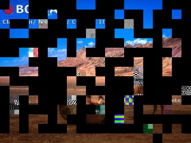
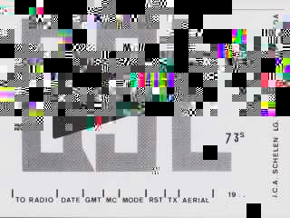
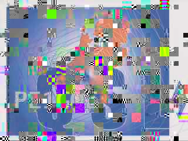
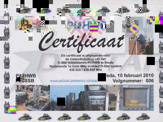
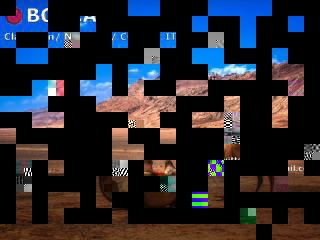
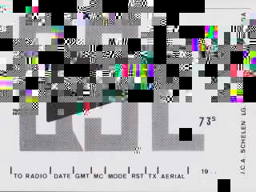
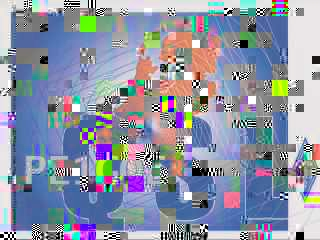
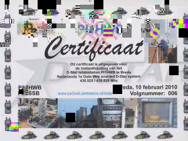

Z tego artykułu dowiesz się jak dekodowac sygnały z satelity Es’Hail 2
Katarski satelita Es’Hail 2 cały czas nadaje na swoim transponderze NB (NarrowBand) sygnały trzech Beaconów.
Dolny Beacon znajduje się na częstotliwości 10 489 500 khz. Nadaje cały czas tą samą wiadomość alfabetem Morse’a.
hi de qo100 qra dk0sb
Do zdekodowania sygnału użyłem programu CwGet.
BPSK Beacon (czasem podpisywany jako Mid Beacon) nadaje telemetrie. Nadaje na częstotliwości 10 489 750 khz. Aby odkodować sygnał potrzebujemy dekodera, przykładowo może to być program ao40rcv. Program możemy pobrać na stronie producenta. Po chwili nasłuchu sygnału powinniśmy otrzymać dane.
Po chwili w oknie programu zobaczymy informacje.
Możemy ponadto odczytać takie dane jak stan nadajników, stan odbiorników, stan beaconów, informacje o zasilaniu, baterii, temperatury paneli, zbiorników, baterii, odbiorników, nadajników i wiele innych ciekawych rzeczy.
Cała odebrana telemetria znajduje się niżej.
Beacon górny tak jak beacon dolny nadaje wiadomosci alfabetem Morse’a.
Często na satelitę nadawane są obrazki. Są one kodowane jako SSTV (Slow Scan Television) lub KGSTV (cyfrowa wersja SSTV).
Do odbioru SSTV wykorzystujemy programy MMSSTV lub RXSSTV natomiast do KGSTV programu KG-STV który możemy pobrać ze strony.
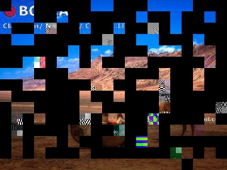
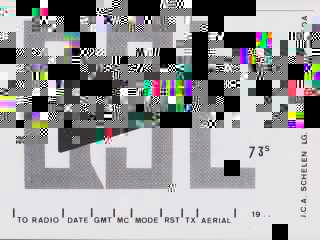
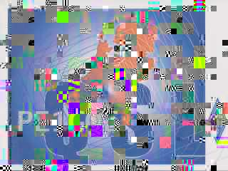
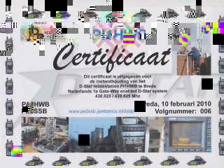